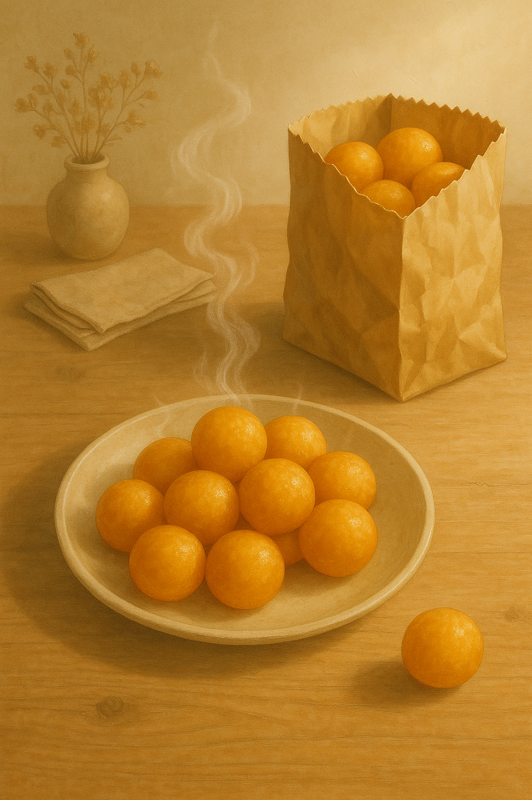
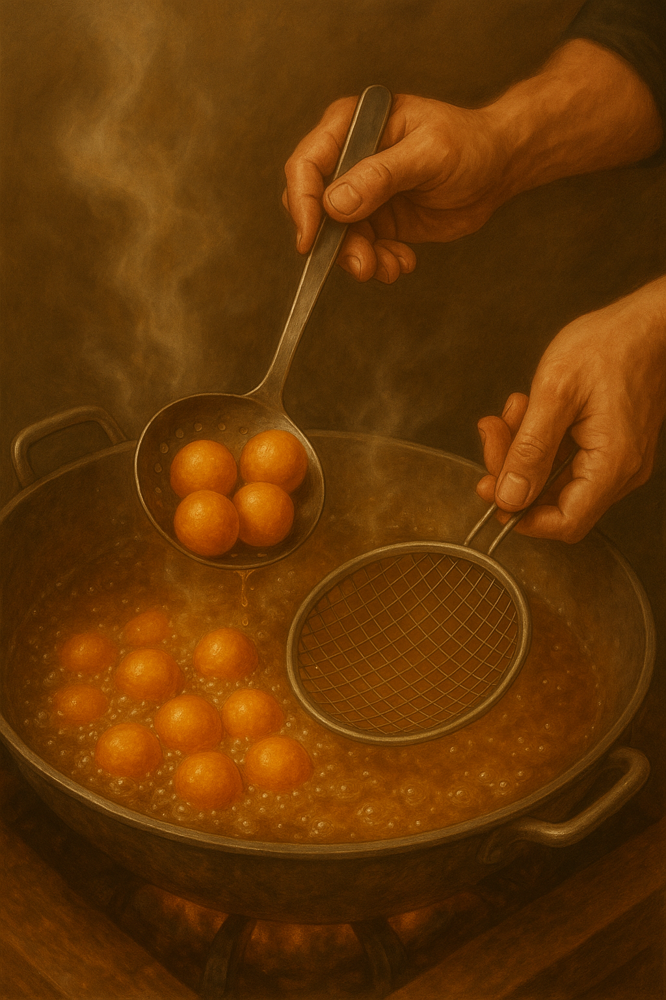
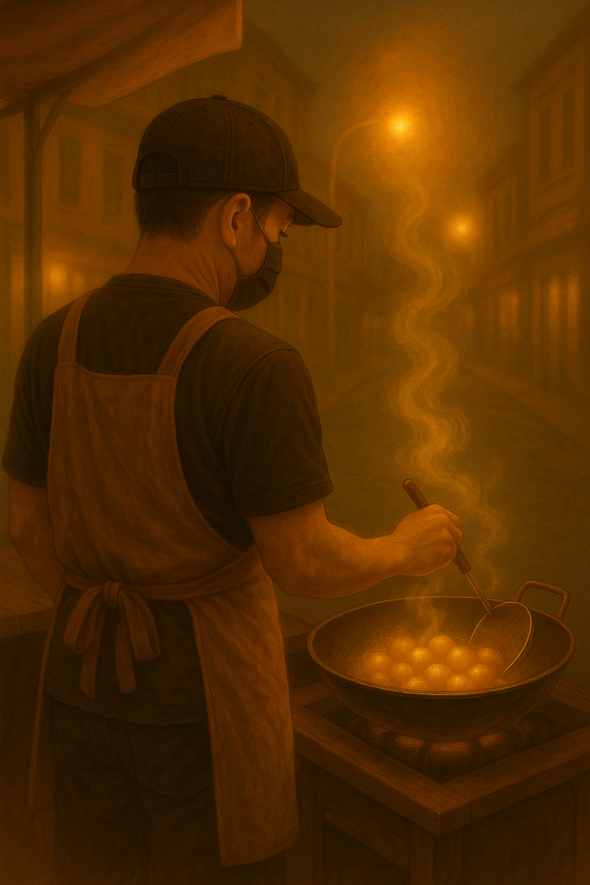

本作品為個人設計與文案練習。
主題「ＱＱ球職人手作」為虛構品牌，非真實商業營運。
目的在於探索「職人精神 × 手作溫度 × 敘事美學」的創作呈現。
希望這份作品，能為熱愛品牌故事與手作文化的你，帶來一點靈感與暖意。
空氣開始變得柔軟，淡水街頭的風多了幾分涼意。就在轉角，一陣甜香穿過人群——那是剛起鍋的地瓜球，金黃、滾燙，像一顆顆小太陽，在油鍋裡輕輕跳舞。我忍不住停下腳步，望著那鍋油光閃閃的畫面，聽著滋滋作響的聲音，那是一種近乎安靜的熱鬧。他站在鍋前，動作不快，卻極穩，像在聽油溫的呼吸。每一次翻動都帶著節奏——那不是在炸，而是在「照顧」一顆顆小球的生命。我看見他微微笑著，像是在對自己說話，也像在回應那鍋的氣息。那一刻，我心裡忽然覺得——這香氣，不只是味道，而是一種信念。
他笑著說：「我不是在炸地瓜球，我是在讓它變成幸福。」原來，他每天清晨親自挑地瓜，分辨每一顆的濕度、纖維與香氣；手揉粉糰、掌控油溫，不是為了效率，而是為了「剛剛好」。他說：「甜可以被複製，但用心不能。」在這個講求速度的時代，他卻願意花三倍時間，只為那一口剛好的香甜。
他說：「手，是唯一能記住溫度的東西。」那雙手粗糙卻溫柔，指尖的動作有節奏、有呼吸，彷彿在傾聽地瓜球的心聲。每一次捏壓、每一次翻動，都不是機械，而是一場對話。我問他為什麼不改用機器？他笑說：「機器能做形狀，卻做不出靈魂。」那時我終於明白——他做的不是點心，而是一種溫度的延續。
油鍋再次冒起細小的泡，香氣順著風在街上蔓延。他拿起一顆剛起鍋的地瓜球，遞給我。那一刻，我看見他眼裡的光。他說：「時間炸出的，不只是味道，還有人心。」那不是糖的味道，是用心的味道。或許，這就是他想傳遞的——讓人記得生活裡還有一份剛剛好的甜。
